Summary
- Theory
- Overview
- Fitting a temporal random forest
- Threshold selection
- Variable importance
- E-space performance
- Projecting predictions
- G-space performance
- Next steps
Theory
TemporalModelR operates across two complementary dimensions to support temporally explicit modeling:
-
E-space- (Environmental Space) represents a location in terms of its environmental conditions, independent of geography. A species’ niche in E-space is its tolerance for a given set of environmental variables. -
G-space- (Geographic Space) represents a location in terms of where it physically sits on the landscape. Every point in G-space has a corresponding location in E-space.
Because environmental conditions change over time, the same point in G-space may move through E-space across years, decades, or seasons. Traditional, temporally-static workflows assume both G-space and E-space to be stable in time. TemporalModelR assumes only that the niche (i.e., the species’ tolerance in E-space) is stable across the study period, while the E-space coordinates of any G-space location may change over time. Species observations are therefore matched to E-space data correct in both space and time, the niche is modeled in time-independent E-space. This is done in the Preprocessing temporally explicit data vignette.
By modeling the niche in time-independent E-space using time-independent training data, we can generate a static prediction of a species’ environmental tolerances. We can then project these static E-space predictions back onto G-space at explicit time periods, resulting in dynamic, temporally-explicit ENM predictions of species distributions.
Overview
build_temporal_rf() fits one random forest classifier
per cross-validation fold as was created during the Preprocessing
temporally explicit data vignette. Each fold’s model is trained on
all data outside the fold and evaluated on the held-out fold. Predictors
are supplied as a character vector via model_vars rather
than as a formula, since random forests automatically capture
nonlinearities and interactions without needing them to be specified. A
threshold is selected on the training data and applied to the continuous
probability predictions (the per-tree vote fraction for the presence
class) to produce binary suitability output for downstream
summarization.
Random forests are an ensemble of decision trees, each grown on a bootstrap sample of the training data and split using a random subset of predictors at each node. The result is a flexible model that captures nonlinear environmental responses and interactions automatically, but sometimes with the the trade-off of interpretability. Random forests do not produce explicit response curves or coefficients, so effects on the response are visualized through variable importance and partial dependence plots. See Variable importance.
This vignette runs the seasonal workflow using the bundled
tmr_partition and tmr_absences objects, which
are pre-built outputs of the partitioning and pseudoabsence steps
produced by the Preprocessing
temporally explicit data vignette using the same call patterns shown
there. The dataset itself is described in About
the Example Dataset.This is the same dataset as is used in each
modeling vignette GLM,
GAM,
Random
Forest or Hypervolume.
The randomForest package is a hard dependency of
build_temporal_rf() and must be installed before
running:
install.packages("randomForest")
library(TemporalModelR)
library(terra)
#> terra 1.9.34
data(tmr_partition, package = "TemporalModelR")
data(tmr_absences, package = "TemporalModelR")Fitting a temporal random forest
The minimal call needs the partition, the pseudoabsences, a character
vector of predictor variable names, and the time columns. We fit a
forest with default settings (500 trees,
mtry = floor(sqrt(p))) and let the function select per-fold
thresholds via the True Skill Statistic (TSS), though this threshold may
also be set manually or using prevalence. See Threshold selection.
create_plot = TRUE allows the function to generate
partial dependence plots for each per-fold model result. On the below
graphs, variable importance and partial dependence plots are shown
per-fold, and the selected threshold is indicated with a horizontal
dashed line.
rf_out <- build_temporal_rf(
partition_result = tmr_partition,
pseudoabsence_result = tmr_absences,
model_vars = c("elevation", "forest_cover", "prseas"),
rf_params = list(),
threshold_method = "tss",
output_dir = file.path(tempdir(), "RF_Models"),
create_plot = TRUE,
time_cols = c("year", "season"),
verbose = FALSE
)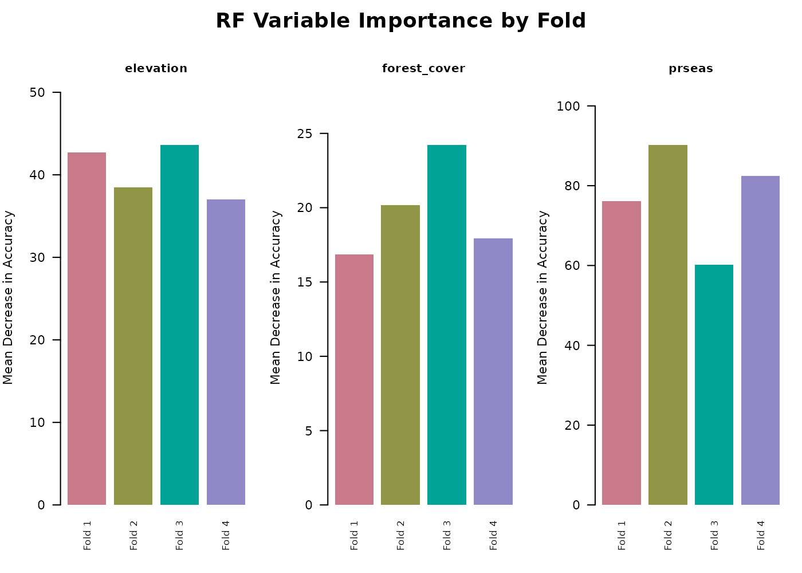
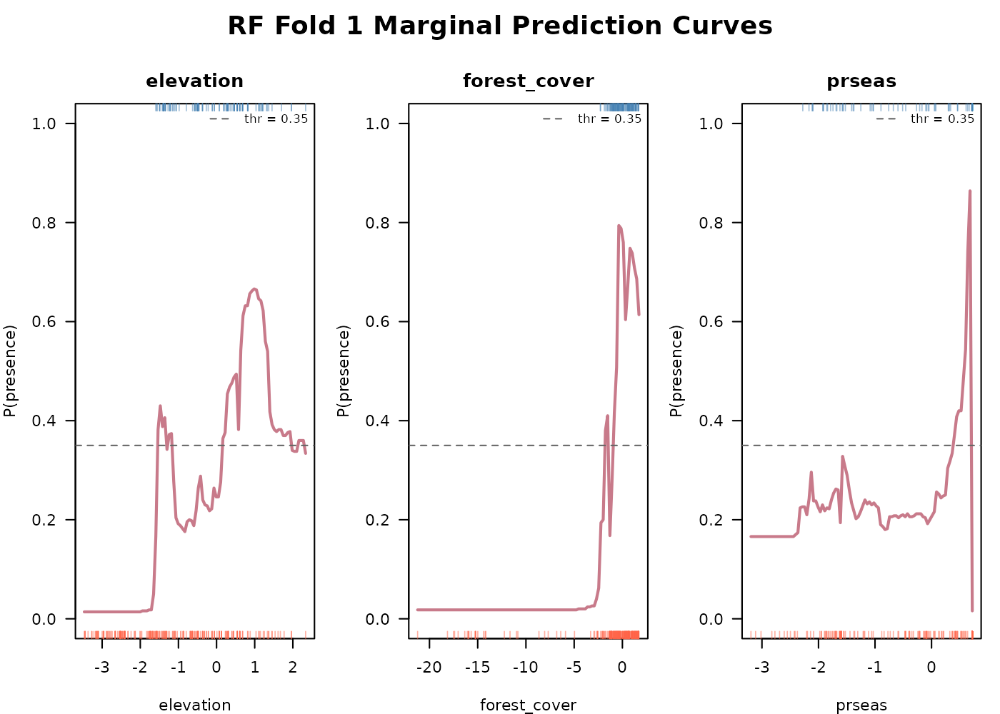
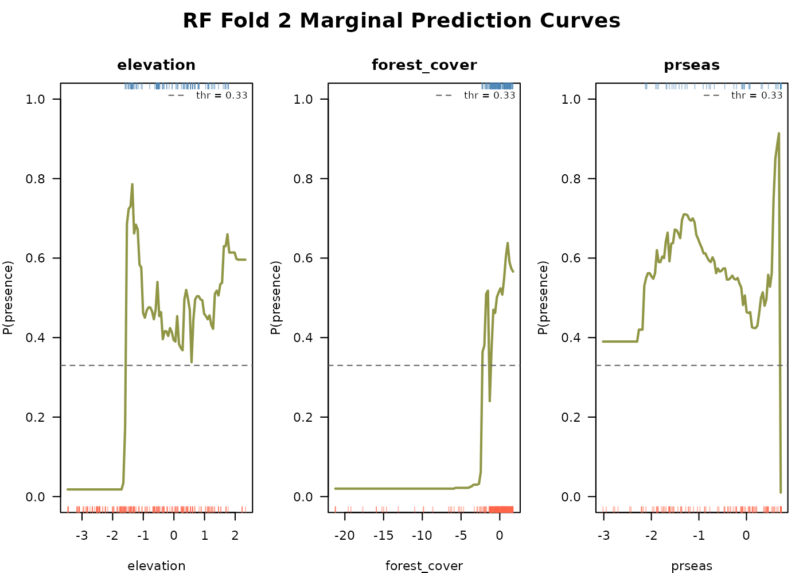
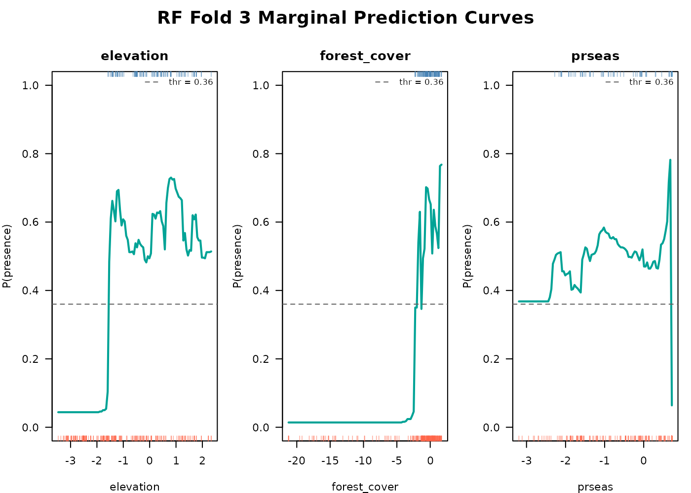
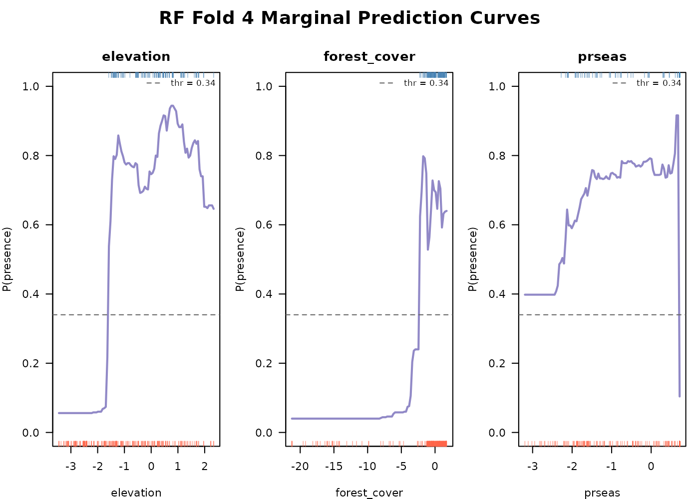
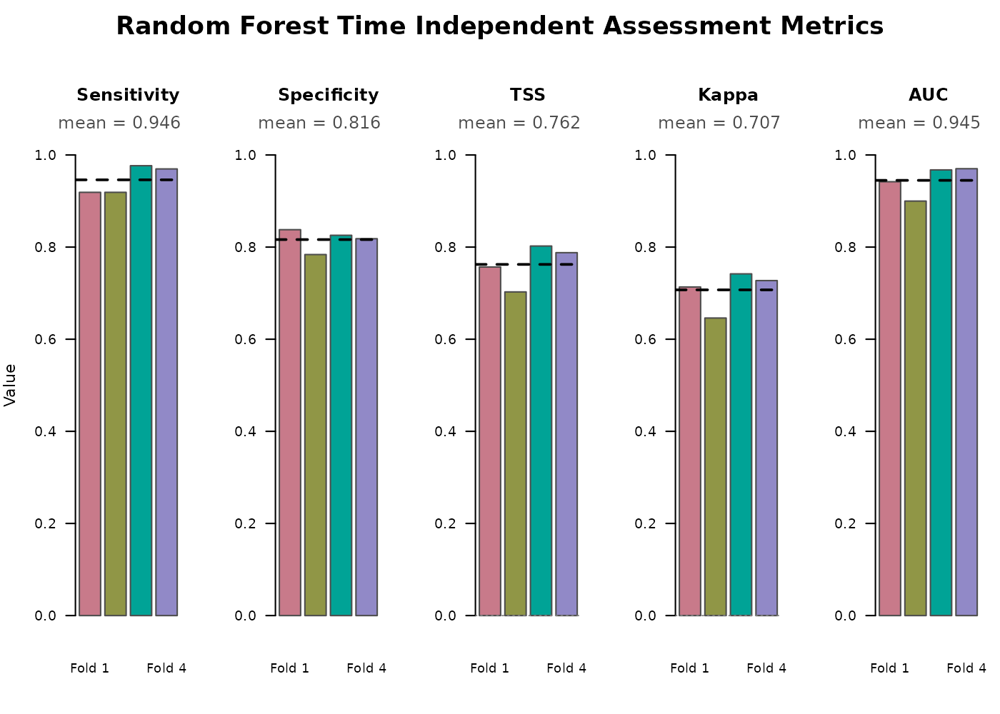
The partial dependence plots show how the model captures each
predictor’s marginal effect on suitability, averaged over the other
predictors. The same create_plot = TRUE function also
visualizes time independent model assessment metrics relevant to the
random forest (above). See E-space
performance.
class(rf_out)
#> [1] "TemporalRF" "list"
names(rf_out)
#> [1] "models" "thresholds" "threshold_method"
#> [4] "model_vars" "variable_importance" "fold_training_data"
#> [7] "fold_test_metrics" "output_dir" "model_type"
#> [10] "plots"The returned object is a list of class "TemporalRF"
containing the following objects:
-
$models- named list ofrandomForestobjects, one per fold (fold1,fold2, …). Each is a standardrandomForest::randomForestfit and accepts the usualpredict(),print(), andrandomForest::importance()calls. -
$thresholds- named numeric vector of probability thresholds used to binarize predictions for each fold. -
$threshold_method- character or numeric value recording how the thresholds were chosen ("tss","prevalence", or a fixed numeric value). -
$model_vars- character vector of the predictor variable names supplied to the function. Used bygenerate_spatiotemporal_predictions()to know which raster layers to assemble at projection time. -
$variable_importance- named list of per-fold variable importance tables. Each is a data frame with columnsvariable,mean_decr_acc(mean decrease in accuracy from permutation), andmean_decr_gini(mean decrease in Gini impurity). See Variable importance. -
$fold_training_data- named list of the training data frames used for each fold, with presences and pseudoabsences combined and environmental columns attached. -
$fold_test_metrics- data frame of per-fold E-space metrics computed on the held-out test set. See E-space performance. -
$output_dir- path to the directory where the saved RDS of fitted models and the fold test metrics CSV were written. -
$model_type-"rf", used bygenerate_spatiotemporal_predictions()to choose the correct projection logic. -
$plots- list of recorded base-R plots produced whencreate_plot = TRUE(partial dependence plots and the fold metrics bar chart).
Note that unlike GLMs and GAMs, the random forest builder does not
take a model_formula or link argument.
Interactions and nonlinearities are captured automatically by the tree
structure, and the probability scale comes directly from class vote
fractions rather than a link function.
Anything that would normally be passed to
randomForest::randomForest() can go in
rf_params. See ?randomForest::randomForest()
for the full list.
Threshold selection
Random forests produce probabilities on the 0–1 scale via the vote
fraction for the presence class across all trees in the forest. The rest
of the TemporalModelR pipeline operates on binary suitability rasters,
so a probability threshold must be chosen to convert probabilities into
0/1 predictions. threshold_method supports three
options:
-
"tss"(default) - selects the threshold that maximizes True Skill Statistic (sensitivity + specificity − 1) on the training data. See E-space performance. This balances commission and omission. -
"prevalence"- sets the threshold equal to the prevalence (proportion of presences) in the training data for that fold. - A numeric value between 0 and 1 - used as a fixed threshold for all
folds, e.g.
threshold_method = 0.4.
The chosen thresholds for our four folds:
rf_out$thresholds
#> fold1 fold2 fold3 fold4
#> 0.35 0.33 0.36 0.34These are per-fold values because each fold trains on a different subset of data and may end up with different probability distributions. Using a single global threshold across folds risks underclassifying suitability in some folds.
Variable importance
Random forests give per-fold variable importance via the mean
decrease in classification accuracy when each predictor is permuted, and
via the mean decrease in Gini impurity at the splits each predictor
participates in. The function records both in
$variable_importance:
rf_out$variable_importance$fold1
#> variable mean_decr_acc mean_decr_gini
#> 1 elevation 42.71678 46.75870
#> 2 forest_cover 16.86733 29.54803
#> 3 prseas 76.17925 73.83013Comparing across folds tells you whether the same predictors are consistently informative, or whether their relative ranking changes between spatially or temporally distinct folds. Predictors that flip rank dramatically across folds often indicate that the model is detecting fold-specific patterns rather than a stable niche signal.
When create_plot = TRUE was set in Fitting a temporal random forest, the function
additionally produces partial dependence curves for each predictor,
showing the marginal effect of that variable averaged over all
others.
E-space performance
Each fold’s held-out test set provides a set of presence and pseudoabsence points the model has never seen based on the folds defined in the Preprocessing temporally explicit data vignette. We compare predicted vs observed at those points and compute confusion-matrix metrics. Because these are evaluated in E-space (the species’ environmental tolerance, independent of geography or time), they give a stable picture of how well the model is preforming.
rf_out$fold_test_metrics
#> Fold Threshold Testing_TP Testing_FN Testing_TN Testing_FP Sensitivity
#> 1 1 0.35 34 3 62 12 0.9189
#> 2 2 0.33 34 3 58 16 0.9189
#> 3 3 0.36 42 1 71 15 0.9767
#> 4 4 0.34 32 1 54 12 0.9697
#> Specificity TSS Kappa AUC
#> 1 0.8378 0.7568 0.7134 0.9419
#> 2 0.7838 0.7027 0.6460 0.8999
#> 3 0.8256 0.8023 0.7419 0.9676
#> 4 0.8182 0.7879 0.7273 0.9702Columns:
-
Fold- fold identifier matching the folds intmr_partition$points_sf$fold. -
Threshold- the per-fold probability threshold used to binarize predictions. -
Testing_TP- count of test-set presence points correctly classified as suitable (true positives). -
Testing_FN- count of test-set presence points incorrectly classified as unsuitable (false negatives). -
Testing_TN- count of test-set pseudoabsence points correctly classified as unsuitable (true negatives). -
Testing_FP- count of test-set pseudoabsence points incorrectly classified as suitable (false positives). -
Sensitivity- proportion of test-set presences correctly classified,Testing_TP / (Testing_TP + Testing_FN). Values close to 1 mean the model rarely misses presences. -
Specificity- proportion of test-set pseudoabsences correctly classified,Testing_TN / (Testing_TN + Testing_FP). Values close to 1 mean the model rarely flags pseudoabsence points as suitable. -
TSS- True Skill Statistic,Sensitivity + Specificity - 1. Ranges from -1 to 1, with 0 indicating performance no better than random and values above ~0.4 considered useful for most applications. -
Kappa- Cohen’s kappa statistic adjusting overall classification accuracy for the accuracy expected by chance. Ranges from -1 to 1 with similar interpretation to TSS. -
AUC- area under the ROC curve, computed on continuous probabilities rather than binarized predictions, so it is threshold-independent. Useful for comparing the models overall performance independent of threshold.
The full ROC curve and each above metric are also graphed as an
output of create_plot = T in the Fitting
a temporal random forest section.
E-space metrics are robust to imbalanced sample sizes across time, because they pool across the time series. They are a good metric for assessing overall model fit. Random forest AUC is typically higher than GLM or GAM AUC on the same data, which can be a sign of genuinely better performance or of overfitting. Compare against the G-space metrics computed during projection to distinguish the two. Time-specific (G-space) metrics can also be assessed later when we project the model to specific G-space and time combinations.
Projecting predictions
generate_spatiotemporal_predictions() projects each
fold’s model onto a stack of environmental rasters matching each
requested time step, producing one fold-vote raster per time step. The
same call works for all four model types; model_type in the
model object tells the function which projection logic to use.
For this example we project across all 15 years and 4 seasons, producing 60 prediction layers total, each summarizing votes across the four folds:
scaled_dir <- system.file("extdata/rasters_scaled", package = "TemporalModelR")
time_steps <- expand.grid(
year = 1:15,
season = c("Spring", "Summer", "Autumn", "Winter"),
stringsAsFactors = FALSE
)
preds <- generate_spatiotemporal_predictions(
partition_result = tmr_partition,
model_result = rf_out,
pseudoabsence_result = tmr_absences,
raster_dir = scaled_dir,
variable_patterns = c(
"elevation" = "elevation",
"forest_cover" = "forest_cover_YEAR",
"prseas" = "prseas_YEAR_SEASON"
),
time_cols = c("year", "season"),
time_steps = time_steps,
output_dir = file.path(tempdir(), "RF_Predictions"),
overwrite = TRUE,
verbose = FALSE
)We can now visualize the 60 prediction rasters as a year-by-season grid. Each cell shows the number of folds (0 to 4) that classified that pixel as suitable.
terra::plot() limits each call to 16 layers, so we
render the stack in four blocks of four years each.
pred_stack <- terra::rast(preds$prediction_files)
pred_names <- basename(preds$prediction_files)
pred_seasons <- sub(".*_(Spring|Summer|Autumn|Winter)\\.tif$", "\\1", pred_names)
pred_years <- as.numeric(sub(".*_(\\d+)_(Spring|Summer|Autumn|Winter)\\.tif$",
"\\1", pred_names))
season_levels <- c("Spring", "Summer", "Autumn", "Winter")
stack_order <- order(pred_years, match(pred_seasons, season_levels))
pred_stack <- pred_stack[[stack_order]]
ordered_years <- pred_years[stack_order]
ordered_seasons <- pred_seasons[stack_order]
names(pred_stack) <- paste0("Y", ordered_years, "_", ordered_seasons)
block1 <- which(ordered_years %in% 1:4)
block2 <- which(ordered_years %in% 5:8)
block3 <- which(ordered_years %in% 9:12)
block4 <- which(ordered_years %in% 13:15)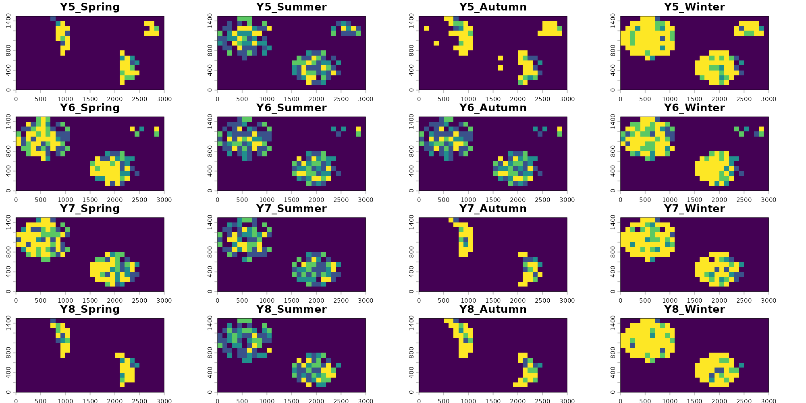
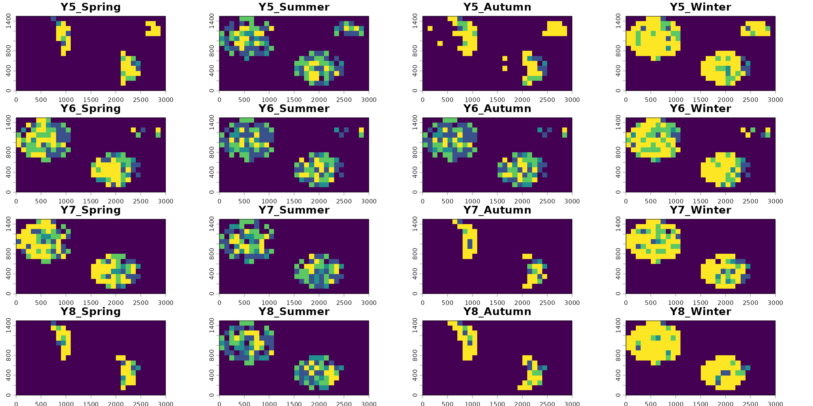
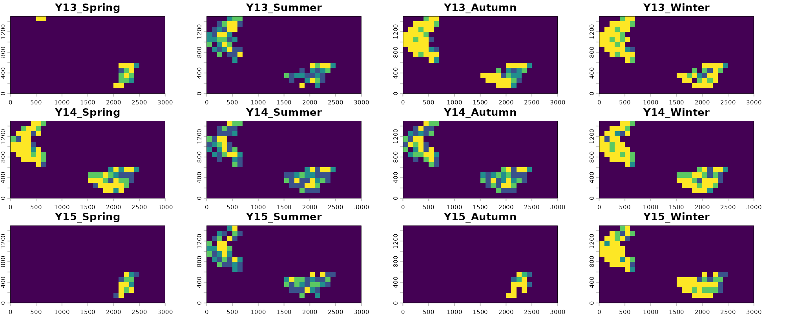
These rasters represent consensus votes among each of our four folds, with yellow pixels having strong positive consensus among all folds (all four identify the pixel as suitable) and blue pixels having low consensus among folds (few to no folds identify the given pixel as suitable). We also see that the models correctly visually show one of the main temporal trends in the data: loss of habitat through deforestation starting around year 6.
Visualizing our predictions across each season and year, we see more
inconsistent agreement among models than in other model methods
presented in the modeling vignettes. RF models have an ability to fit
much more complex relationships to variables compared to GLM and GAM,
but lack an ability to extrapolate which both of those models have. As a
result, RF may be prone to overfitting and this should be watched for.
The per-fold partial dependence plots produced when
create_plot = TRUE are the most direct way to check for
this issues, with erratic curves indicating overfitting and curves that
don’t drop to a clear low value at the edges of the rug indicating
extrapolation risk. We see some indication of this above and it
manifests in the resulting predictive maps.
The random forest model was unable to find a clean precipitation cutoff, and as a result the predictions vary erratically across folds rather than producing a stable suitability surface. This likewise has to do with the distribution of our absence data.This likewise has to do with the distribution of our absence data, which is restricted to the same Spring and Autumn time steps as the presences and so cannot teach the model what unsuitable precipitation looks like in the other seasons, the same issue seen in our GLM and GAM models but manifest in a different way. We can explore if other modeling methods are able to fix this hurdle in other vignettes. Alternatively, we could use an alternative method for generating absence points which we describe more in the the Preprocessing vignette.
Note that here we show that time_steps can handle making
predictions from compound variables or variables at different temporal
scales so long as their temporal scales are nested. For example here
“elevation” has no temporal value and is considered to be static across
all time steps. “forest_cover” is measured annually, but is considered
to be static across all seasons within a year for the purposes of
predictions. “preseason” is measured both by year and season, so
resulting seasonal predictions reflect that. However if precipitation
was only measured based on aggregate seasons but had no associated year,
predictions would fail. Predictions can also be made where all variables
share the same time step- for example annual forest cover, annual
temperature, and annual precipitation.
Additionally, a plain vector like time_steps = 1:15
produces one prediction per value of the first time column; the other
time columns are filled in with every unique value present in the
occurrence data. So a vector input with
time_cols = c("year", "season") would produce one
prediction per year-season combination observed in the data. A data
frame like the expand.grid() above gives explicit control:
any combination of values can be requested, including ones not present
in the occurrence data, as long as the matching rasters exist (Such as
Summer or Winter predictions).
G-space performance
Once predictions are projected, per-time-step metrics become available. These are computed by overlaying the held-out test points (presences plus, optionally, pseudoabsences) on the prediction raster for each time step they fall in and counting correct vs incorrect classifications.
head(preds$timestep_metrics)
#> Fold Pct_Suitable N_Pres TP FN Sensitivity CBP N_Abs TN FP
#> 1 1 0.0622 2 2 0 1 0.0038716049 4 4 0
#> 2 2 0.0644 2 2 0 1 0.0041530864 4 3 1
#> 3 3 0.0600 5 5 0 1 0.0000007776 10 10 0
#> 4 4 0.0622 0 NA NA NA NA NA NA NA
#> 5 1 0.2556 0 NA NA NA NA NA NA NA
#> 6 2 0.2689 2 2 0 1 0.0723012346 4 1 3
#> Specificity TSS year season
#> 1 1.00 1.00 1 Spring
#> 2 0.75 0.75 1 Spring
#> 3 1.00 1.00 1 Spring
#> 4 NA NA 1 Spring
#> 5 NA NA 2 Spring
#> 6 0.25 0.25 2 SpringColumns:
-
Fold- fold identifier; one row per fold per time step. -
Pct_Suitable- proportion of the study area predicted suitable in that time step. -
N_Pres- number of held-out presence test points falling in that time step for that fold. -
TP- true positives, presences correctly classified as suitable in that time step. -
FN- false negatives, presences incorrectly classified as unsuitable in that time step. -
Sensitivity-TP / (TP + FN)for that fold-time step. -
CBP- cumulative binomial probability. Under the null that each test point lands in suitable area at the ratePct_Suitable, this is the probability of observing exactlyTPcorrectly classified points by chance. Small values indicate predictions are better than random. -
N_Abs- number of held-out pseudoabsence test points falling in that time step.NAfor presence-only models. -
TN- true negatives, pseudoabsences correctly classified as unsuitable. -
FP- false positives, pseudoabsences incorrectly classified as suitable. -
Specificity-TN / (TN + FP)for that fold-time step. -
TSS-Sensitivity + Specificity - 1for that fold-time step. -
yearandseason- the values oftime_colsfor that row, identifying which time step the metrics belong to.
G-space metrics are powerful in time steps with substantial sample
sizes but lose meaning when few records exist (as with out example). A
fold with only one presence in a given year can score sensitivity 0 or 1
with no real information content. Likewise, the ability to earn a
significant G-space CBP score explicitly depends on sample size. Report
E-space (from $fold_test_metrics) and G-space (from
$timestep_metrics) together for a complete view of model
performance.
The overall summary gives a per-fold summary across all time steps:
preds$overall_summary
#> Fold N_Timesteps Mean_Pct_Suitable Total_TP Total_FN Overall_Sensitivity
#> 1 1 60 0.1343 34 3 0.9189
#> 2 2 60 0.1436 30 7 0.8108
#> 3 3 60 0.1201 42 1 0.9767
#> 4 4 60 0.1371 32 1 0.9697
#> Overall_CBP Total_TN Total_FP Overall_Specificity Overall_TSS
#> 1 1.139110e-26 63 11 0.8514 0.7703
#> 2 1.800673e-19 58 16 0.7838 0.5946
#> 3 8.192358e-38 71 15 0.8256 0.8023
#> 4 6.865098e-27 54 12 0.8182 0.7879Rapid visual assessment of these metrics can be done using the
function plot_model_assessment() which generates simple
summary plots for each.
plot_model_assessment(
predictions = preds,
time_column = c("year", "season"),
secondary_time_mode = "combine",
model_result = rf_out
)
#> Loaded fold_test_metrics for 4 fold(s).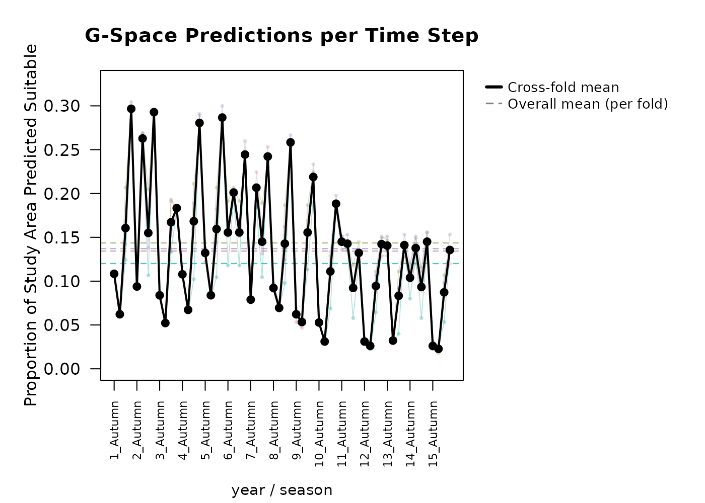
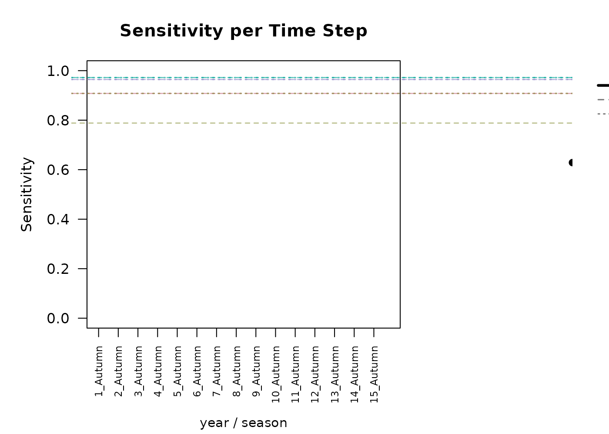
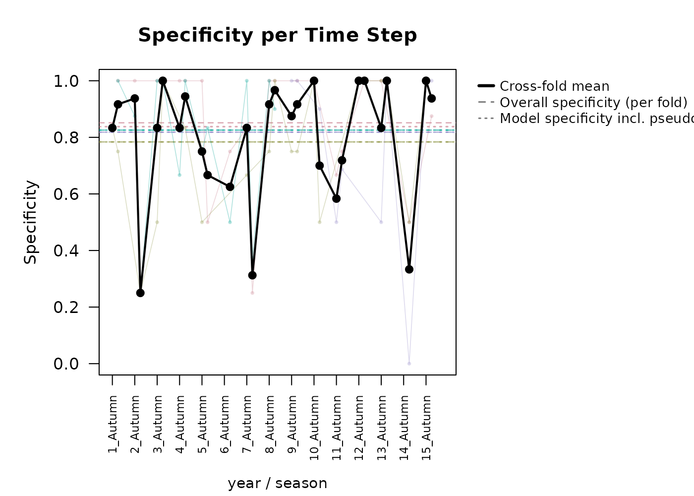
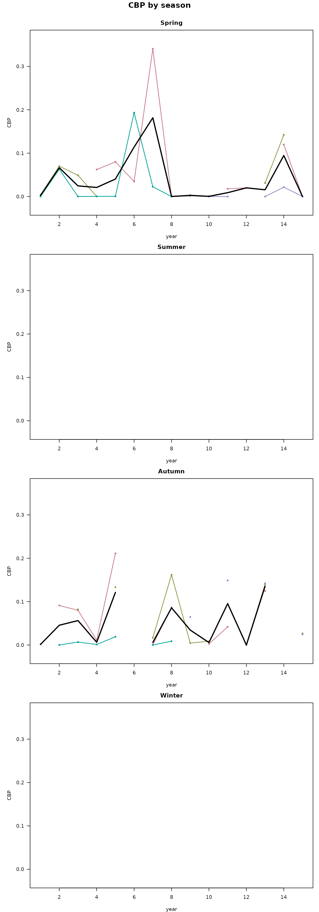
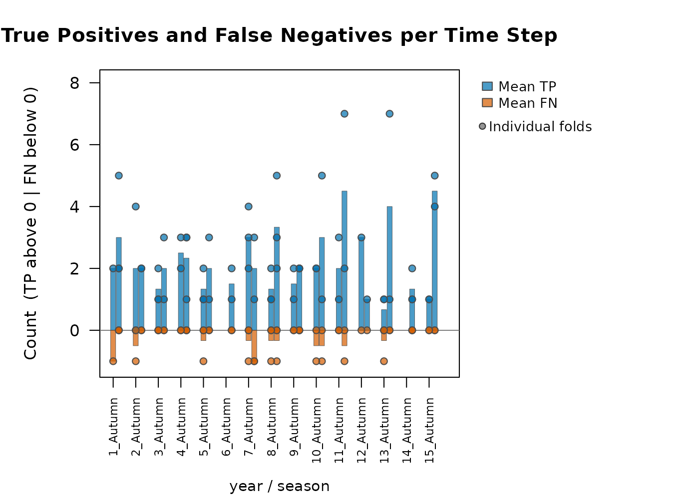
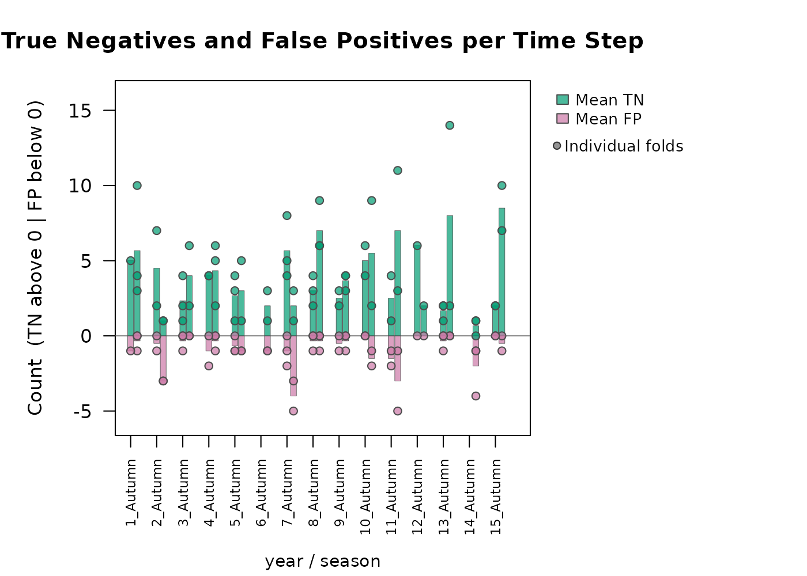
#>
#> Timestep assessment summary.
#> Metric Mean SD
#> Pct_Suitable 0.1338 0.0739
#> Sensitivity 0.9094 0.2202
#> Specificity 0.8007 0.2494
#> CBP < 0.05 (%) 65.1000 NAThis produces per-fold time series of percent suitable, sensitivity,
specificity, CBP, TP/FN, and TN/FP. When model_result is
also supplied, overall sensitivity and specificity from
$fold_test_metrics are added as reference lines. When
compound time steps are used (such as year and season), you must choose
how they are visualized. Choosing
secondary_time_mode = "combine" will roll them into one
continuous x axis. secondary_time_mode = "facet" produces
stacked plots as seen below, where the first time_col is
displayed as the x axis, and a different plot is made for each secondary
variable (season here). By default, the threshold for which
CBP is identified as significant is 0.05, but this may also be adjusted
manually.
plot_model_assessment(
predictions = preds,
time_column = c("year", "season"),
secondary_time_mode = "facet",
model_result = rf_out,
cbp_threshold = 0.001
)
#> Loaded fold_test_metrics for 4 fold(s).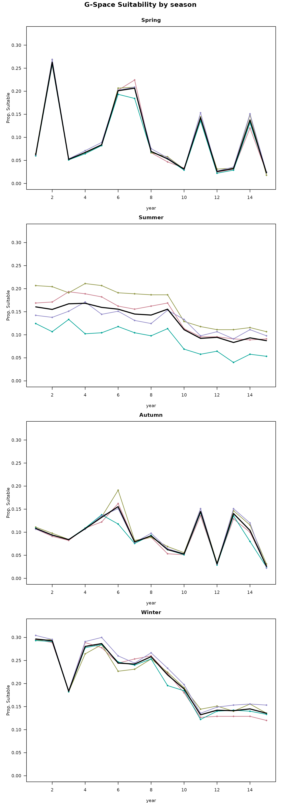
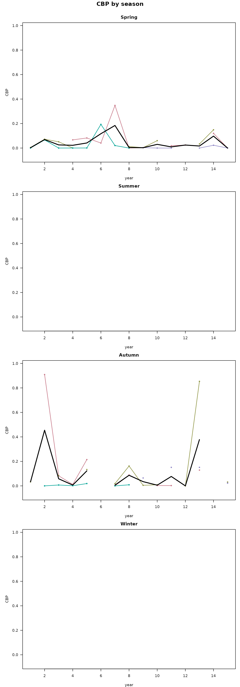
#> Facet mode: produced 4 stacked plot(s) across 4 season value(s).Next steps
Now that predictions have been generated, you can assess the model and see if it is preforming satisfactory enough for what your goals are. If this is the case, you can preform post-processing analyses to try to gain additional inference about the spatiotemporal patterns of change in the study region See the Post-processing predictions vignette.
For comparison with other algorithms applied to the same dataset:
- Modeling with a GLM - linear and polynomial responses.
- Modeling with a GAM - smooth nonlinear responses.
- Modeling with a Hypervolume - presence-only n-dimensional kernel density or one-class SVM.